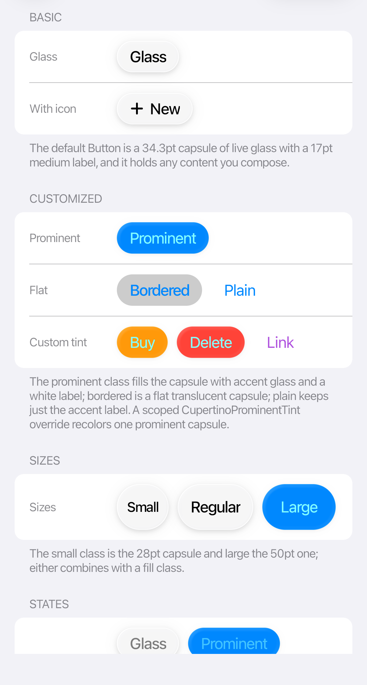
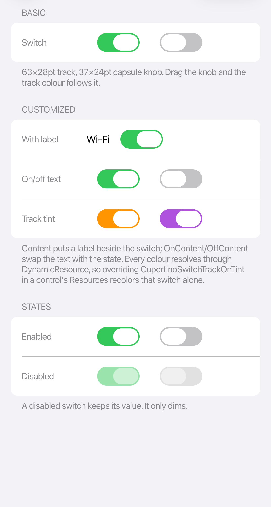

Buttons and input
The theme restyles standard Avalonia controls, so bindings, commands, validation, and events work unchanged.
 |
 |
Buttons
<StackPanel Orientation="Horizontal" Spacing="8">
<Button Content="Cancel" Classes="plain" />
<Button Content="Details" Classes="bordered" />
<Button Content="Continue" Classes="prominent" />
</StackPanel>
Use prominent for the main action, bordered for secondary actions, and plain for less prominent actions. Add small or large to change the control size.
Fields and selection
<StackPanel Spacing="12">
<TextBox Text="{Binding Name}" PlaceholderText="Name" />
<TextBox Classes="search" Text="{Binding Query}" PlaceholderText="Search" />
<ComboBox ItemsSource="{Binding Qualities}"
SelectedItem="{Binding Quality}" />
<ToggleSwitch Content="Notifications"
IsChecked="{Binding NotificationsEnabled}" />
<Slider Minimum="0" Maximum="100" Value="{Binding Volume}" />
</StackPanel>
Keep related fields in a Section or CupertinoFormRow, and leave enough space around touch controls. A paired text field and stepper should use 8 pt spacing; paired date and time capsules use 4 pt.